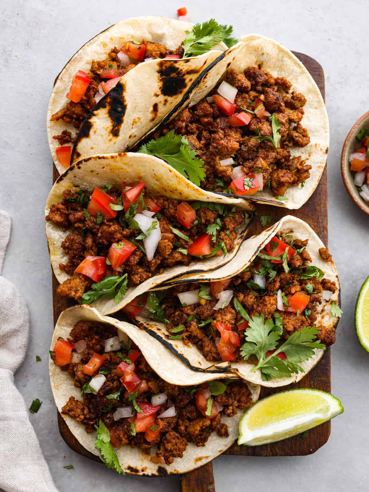

Lasagna

This is an image of tacos. Tacos are always a favorite and so versatile.
- 1 chorizo sausage, casing removed & meat crumbled
- 2 TBS chipoltle peppers in adobe sauce
- 4 corn tortillas
- 2 TBS chopped onion, or to taste/li>
- 2 TBS chopped cilantro, or to taste (optional)
Mix together the crumbled chorizo & chipotle peppers in a bowl
Heat skillet over medium-high heat; add chorizo mixture & cook until crisp, 5- 7 minutes. Transfer to a plate, reserve grease in skillet.
Heat tortills in reserved grease over medium heat until warmed, 1-2 minutes perside. Stack 2 tortillas for each taco, fill it with chorizo, onion, & cilantro
Now, layer 1/4 of the cheese
Place the noodles sheets on top, breaking or cutting if necessary to fit pan